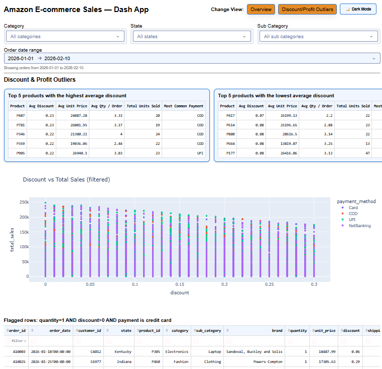

Interactive Analytics
Live Demo
Amazon E-commerce Sales Dashboard (Dash)
Production-deployed Dash app for exploring Amazon e-commerce sales with fast filtering, KPIs, and deep-dive views (including outlier analysis).
- Multi-page dashboard (overview + profitability/outliers)
- Interactive filters with clean state management for fast iteration
- Dockerized build, deployed to Google Cloud Run via IaC workflow
Python
Dash
Plotly
Pandas
Docker
Cloud Run
Terraform
Spacelift